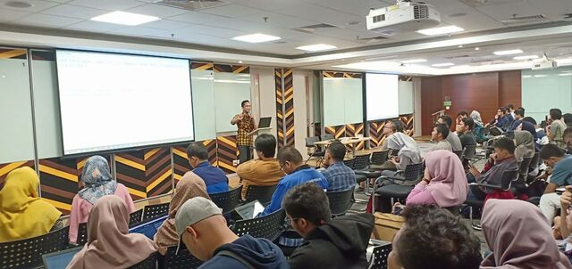
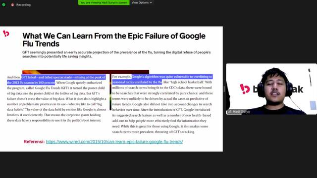

Tentang Kami
Komunitas tentang bahasa pemrograman R
Grup tempat diskusi tentang R (bahasa pemrograman untuk statistika), statistika, dan terkait.
Dibuat 13 Agustus 2016, 11.04 WITA.
- Kami memiliki 3000+ anggota aktif Warga Negara Indonesia
- Terdiri dari berbagai latar belakang terutama peneliti/analis/pengembang
Kegiatan Kopi Darat (KopDar)

KopDar Microsoft Indonesia 2019
KopDar Akbar Pertama pada awal tahun 2019 di Microsoft Indonesia, Jakarta

KopDar Bukalapak X MLID X Komunitas R Indonesia
KopDar pada Juni 2019 di Bukalapak RnD, Bandung

KopDar Online 2020
KopDar dilakukan scr Online
Frequenty Asked Questions
-
Apakah terbuka untuk semua bidang?
Ya. Terbuka untuk semua bidang.
-
Apakah cakupan diskusi khusus tentang sintaks R saja?
Tidak. Anda dapat membahas topik tentang Data Science, Statistika, ataupun hal terkait.